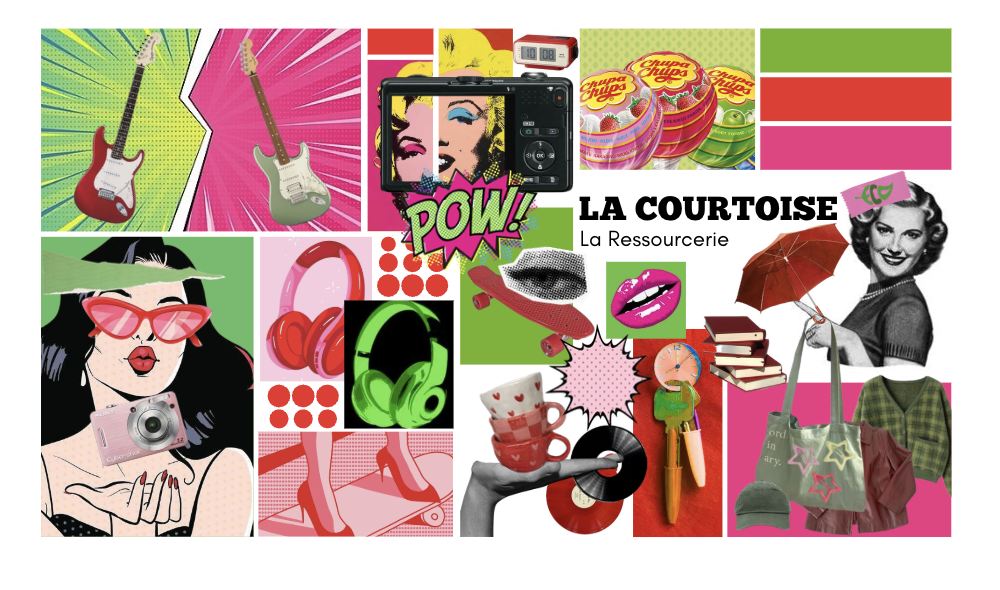

EXPRIMER
Moodboard de La Courtoiserie

Ce projet a été réalisé en BUT 1, au semestre 2, dans le cadre d’un cours de culture artistique. L’objectif était de produire un moodboard inspiré du mouvement du pop art, en y intégrant une création graphique personnelle.
Avant de commencer la réalisation, je me suis appuyée sur les références vues en cours et j’ai également fait des recherches, notamment sur Pinterest, afin de mieux comprendre les codes visuels du pop art, comme les couleurs vives, les contrastes forts ou encore les effets graphiques. Ces recherches m’ont permis de construire une première direction visuelle.
J’ai ensuite créé une composition à partir de plusieurs objets du quotidien assemblés, que j’ai intégrés et retravaillés sur Canva pour produire une affiche cohérente. Cette affiche était pensée comme un support de communication fictif destiné à être placée devant La Courtoise, avec pour objectif d’attirer le public et de donner une image plus dynamique et moderne de la ressourcerie
Avec du recul, ce projet représente une première approche de la recherche graphique. Même si l’intention de communication est présente, la cohérence globale pourrait être améliorée, notamment dans l’harmonisation des éléments et du montage.
AC 13.02 : Produire des pistes graphiques et des planches d'inspiration.